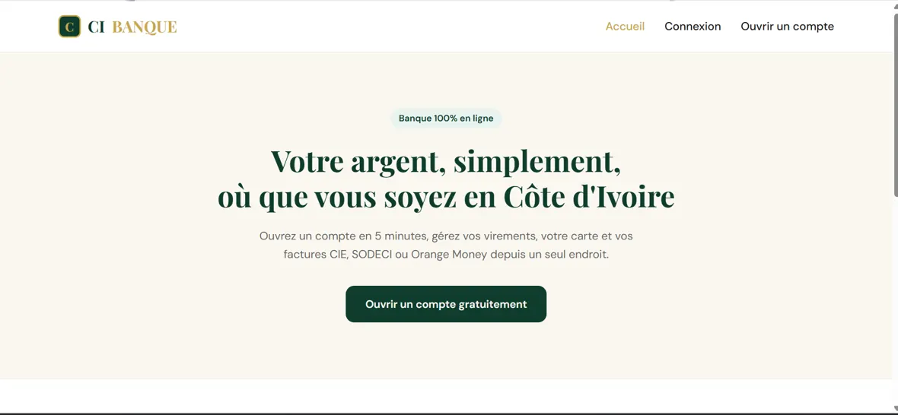
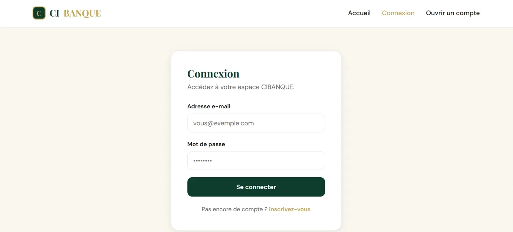
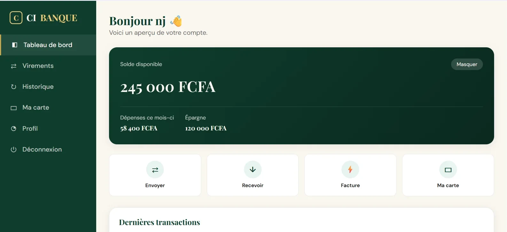

← Tous les projets
Étude de cas
CIBANQUE
Maquette d'application bancaire pensée pour la Côte d'Ivoire : solde, virements, historique, carte et paiement des factures CIE et SODECI, avec des montants en FCFA.

Simulation
Aucune transaction réelle, aucune vérification de mot de passe côté serveur : toutes les données sont fictives.
Ce que ça démontre
- Interface cohérente sur 8 pages : accueil, inscription, connexion, tableau de bord, virements, historique, carte, profil
- Formulaires d'inscription et de connexion gérés en JavaScript
- Données conservées dans le navigateur (localStorage)
- Parcours utilisateur complet : inscription, tableau de bord, virements
Limites
CIBANQUE n'est pas une banque ni un service financier. Les montants sont fictifs, les opérations simulées, et la connexion ne vérifie aucun mot de passe auprès d'un serveur.


Projet suivantDONA CI